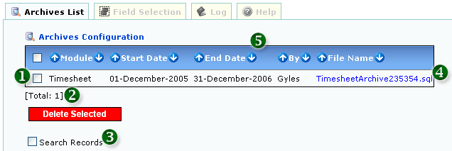

<table class="no-border" cellpadding=3 cellspacing=3>
<tr><td>
	<H1>1. List Archive</H1>
	<pre align="left">     
	<strong>Figure 1: List Archive</strong></pre>
	<ol>
		<li><strong>1. CHECK AND CLICK "DELETE SELECTED" TO DELETE RECORD</strong></li>
		<li><strong>2. LISTING MAX PAGE:</strong> Configurable in the User Preference section</li>
		<li><strong>3. CHECK TO SEARCH RECORDS</strong></li>
		<li><strong>4. CLICK TO DOWNLOAD ARCHIVE</strong></li>
		<li><strong>5. SORTABLE FIELDS</strong></li>
	</ol>
</td></tr>
</table>